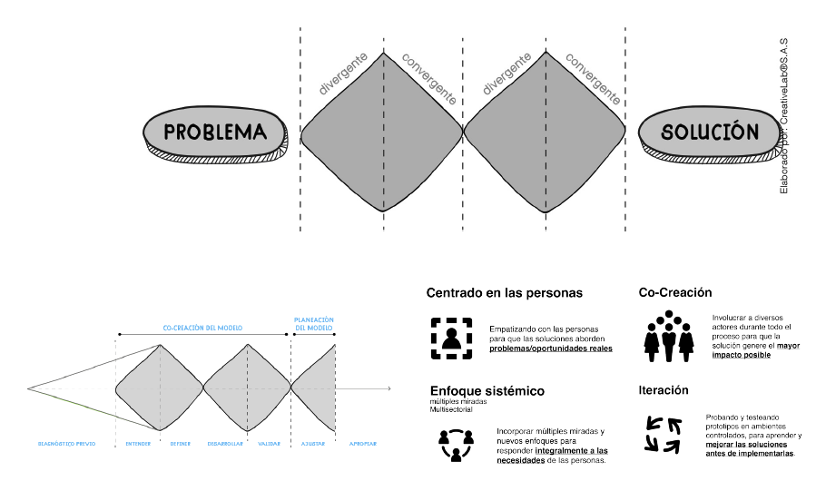
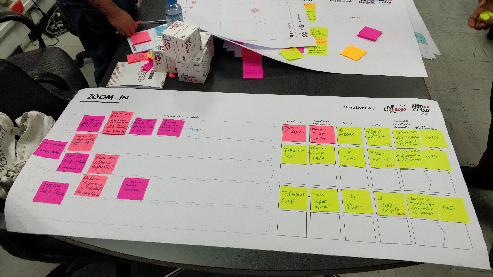
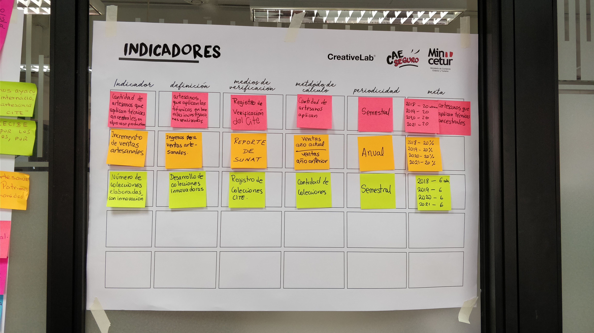
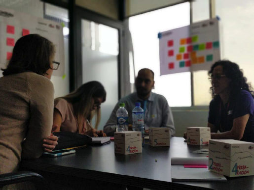
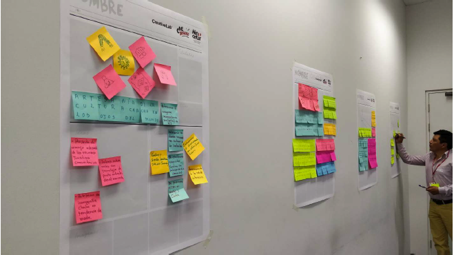
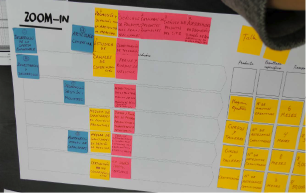

Contexto
Este proyecto fue un taller intensivo de 3 días solicitado por el Ministerio de Comercio Exterior y Turismo (MINCETUR) de Perú, con el objetivo de acompañar a los líderes de los CITE (Centros de Innovación Productiva y Transferencia Tecnológica) en la construcción de un modelo de gestión replicable y alineado con los requerimientos del Estado.
Los CITE son centros estratégicos que impulsan la innovación en sectores como artesanía y turismo, pero enfrentaban desafíos para estructurar sus planes de gestión, optimizar el uso de presupuestos y cumplir con los KPIs exigidos por el gobierno. El taller buscaba traducir el lenguaje técnico estatal en un formato accesible y útil para los líderes de estos centros.
Trabajando desde Creative Lab, creamos herramientas propias, adaptamos otras existentes y facilitamos todo el proceso de principio a fin. A través de dinámicas colaborativas, ayudamos a los participantes a interpretar datos, definir metas y visualizar de forma clara sus hojas de ruta.
Nota personal: Este fue uno de mis primeros proyectos como Service Designer, y fue una experiencia formativa invaluable sobre facilitación intensiva y diseño de herramientas estratégicas.
El Desafío
Diseñar y facilitar un taller intensivo de 3 días que permitiera a líderes de CITE de todo Perú co-crear un modelo de gestión replicable, traduciendo los complejos requerimientos del Estado en herramientas prácticas y accesibles que pudieran implementar inmediatamente.
Mi Rol en el Proyecto
Participé como Service Designer en Creative Lab, siendo la más junior del equipo de 4 personas. Este fue uno de mis primeros proyectos profesionales, y me permitió aprender sobre facilitación de talleres intensivos y diseño estratégico en contextos gubernamentales.
Mis responsabilidades incluyeron:
- Co-diseñar la estructura completa del taller durante las 2 semanas de preparación
- Participar en la creación y adaptación de herramientas metodológicas
- Facilitar dinámicas colaborativas durante los 3 días del taller
- Ayudar a los líderes de CITE a interpretar datos y requerimientos estatales
- Apoyar en la construcción de hojas de ruta y planes de gestión
- Traducir conjuntamente la información técnica en un lenguaje visual y práctico
- Sistematizar resultados y aprendizajes del taller
Enfoque y Proceso
El proyecto se estructuró en dos fases: una preparación intensiva de 2 semanas y un taller presencial de 3 días con todos los líderes de CITE.
Fase 0: Preparación (2 semanas)
Levantamiento de necesidades y diseño del taller:
- Levantamiento de objetivos con MINCETUR
- Análisis de requerimientos de presupuesto y KPIs estatales
- Definición del reto: construir un modelo de gestión aplicable en diferentes realidades
- Adaptación metodológica del doble diamante para sesiones intensivas
- Creación de herramientas propias: templates, canvas, frameworks
- Diseño de dinámicas colaborativas y materiales de trabajo
Día 1: Entendimiento Compartido
Alineación y sistematización de contextos:
- Presentación de cada CITE y sus realidades específicas
- Entendimiento compartido del problema
- Sistematización de data institucional de cada centro
- Mapeo de desafíos comunes y particulares
- Introducción a las herramientas de trabajo
Día 2: Co-creación de Herramientas Clave
Construcción colaborativa del modelo:
- Co-creación de herramientas clave con los equipos de los CITE
- Definición de promesas institucionales
- Establecimiento de metas concretas y alcanzables
- Identificación y asignación de KPIs
- Clarificación de responsabilidades por área
- Traducción de lenguaje técnico del Estado a formato accesible
Día 3: Iteración y Validación
Refinamiento contextualizado por CITE:
- Iteración individual por cada CITE
- Validación del modelo propuesto por cada equipo
- Ajustes según realidades y capacidades específicas
- Presentación de hojas de ruta finales
- Definición de próximos pasos y compromisos
Hallazgos Clave
Cada CITE opera bajo realidades muy distintas
Aunque todos son parte del mismo sistema MINCETUR, cada CITE enfrentaba desafíos únicos según su región, recursos y contexto local. La flexibilidad metodológica fue crucial para que las herramientas fueran útiles para todos.
Traducir el lenguaje del Estado es fundamental
Los requerimientos técnicos del gobierno estaban expresados en un lenguaje burocrático complejo. Traducir esto a formatos entendibles y visuales mejoró dramáticamente la apropiación de los líderes locales.
La co-creación desde el día 1 genera compromiso real
No impusimos un modelo pre-diseñado: facilitamos que ellos mismos lo construyeran. Esta participación activa (no solo consultiva) generó apropiación genuina del proceso y las herramientas.
La visualización de objetivos fortalece el propósito
Ver sus metas, KPIs y responsabilidades plasmadas visualmente ayudó a los equipos a entender el panorama completo y sentirse empoderados para ejecutar.
Resultados
Impactos específicos:
- Se construyó un modelo de gestión adaptable para cada CITE
- Los equipos generaron un plan de acción validado por ellos mismos para los próximos dos años
- Las herramientas diseñadas facilitaron la elaboración de informes exigidos por el Estado
- Se logró una apropiación real del proceso gracias a la participación activa, no solo consultiva
- 2 años después, los CITE seguían usando las herramientas creadas en el taller
Aprendizajes de mi Primer Proyecto
La facilitación es un arte que se aprende haciendo
Como la más junior del equipo, este taller me enseñó que facilitar no es solo guiar dinámicas, sino sostener espacios seguros donde las personas se sientan capaces de crear. Ver cómo los líderes de CITE se apropiaban de las herramientas fue mi primera gran lección sobre el poder del diseño participativo.
Adaptar es más valioso que imponer
No existe un "modelo único" que funcione para todos. Aprendí que las mejores herramientas son aquellas que los usuarios entienden, adaptan y hacen suyas. En procesos de facilitación intensiva, adaptar el método al ritmo y lenguaje del usuario es más importante que seguir la estructura perfecta.
El impacto del diseño no se mide solo al final
Enterarnos 2 años después de que los CITE seguían usando las herramientas que creamos fue la confirmación de que diseñamos algo realmente útil. El verdadero éxito no es solo entregar un workshop, sino crear valor sostenible.
Diseñar para el sector público requiere sensibilidad especial
Trabajar con entidades gubernamentales implica navegar burocracia, lenguaje técnico y múltiples stakeholders. Este proyecto me enseñó a traducir complejidad en claridad sin perder rigor.
Reflexiones
La herramienta más potente es aquella que los usuarios hacen suya.
Este proyecto me enseñó que en procesos de facilitación intensiva, la clave está en acompañar con empatía y claridad. No se trata de llegar con soluciones pre-armadas, sino de crear el espacio y las herramientas para que las personas construyan sus propias respuestas.
Siendo uno de mis primeros proyectos profesionales, me marcó profundamente. Aprendí que el diseño de servicios no es solo metodología, sino también escucha activa, flexibilidad y confianza en la capacidad de las personas para resolver sus propios desafíos cuando se les dan las herramientas adecuadas.
Ver que 2 años después los CITE seguían usando lo que co-creamos juntos fue la mayor validación: diseñamos algo que realmente les sirvió. Y eso, para mí, es el verdadero éxito del diseño estratégico.
Recursos Visuales
Construcción del Taller y Objetivos
Planificación estratégica del taller y definición de objetivos con MINCETUR.

Planificación y objetivos del taller
Herramientas y Metodología
Adaptación del doble diamante y herramientas propias diseñadas para el taller.

Canvas de gestión CITE

Framework de Indicadores
Taller en Acción
Fotografías de las dinámicas colaborativas con los líderes de CITE.

Día 1 - Entendimiento compartido

Día 2 - Co-creación de herramientas

Día 3 - Iteración y validación